W103D 盒子完整指南：从开箱到 MRRC 干活
面向手里刚拿到一台 W103D、什么都没做过的人。全程分两大段：先把系统刷进去（§1–§8）， 再把 MRRC 配到能用（§9–§16）。最后一节是一张打勾清单。
盒子是卖家刷好、直接交给你的？ 那不用读本文，看W103D_USER_GUIDE.md。 速查版（已熟悉流程时看）：packaging/box/README.md要自己出镜像才看：docs/w103d_pack.md
三条前置说明，先说清楚：
—— 那是推荐的最终形态：盒子 + 一根电源线 + 一根网线，不再需要 U 盘。
而且每台盒子的口令都不一样。
不一致。我把三种手段都写了，按你的机器试。
- 走 U 盘路线：Android 的分区与数据不动（只写一次 u-boot 环境，见 §5）。刷坏了拔掉 U 盘重新上电就回到原厂安卓。验收通过后把系统固化进 eMMC（§17）
- 镜像里没有任何密钥。 Web 口令、自签证书都在盒子首启时现生成——所以公开下载这份镜像是安全的，
- §5（让盒子从 U 盘启动）是最容易卡住的一步，因为那一段在原厂安卓里操作，各家固件的菜单路径
---
1. 先认清你的盒子
| 项 | 必须是 |
|---|---|
| 型号 | ZTE W103D（中兴云电脑 / 电视盒子） |
| 芯片 | Amlogic S905L3A（G12A 家族，4×Cortex-A53） |
| 内存/存储 | 2 GB / eMMC 8 GB 或 32 GB 两种（实测 7.3 GB 与 28.9 GB，以实物为准） |
| 网口 | 100M 有线（够用：一路客户端约 60 KB/s） |
| 无线 | MT7663S，只用 2.4 GHz。线上下载的 v1.25.5 镜像带的是会渐进式挂死的 2020 版 N9 固件（见 §20.5）；出厂 2021 版已钉进仓库、1.26.0 起随镜像生效。5 GHz 能关联但数据面不通，还会把芯片拖到 MCU 超时（2026-10-12 实测）。实时音频优先走有线） |
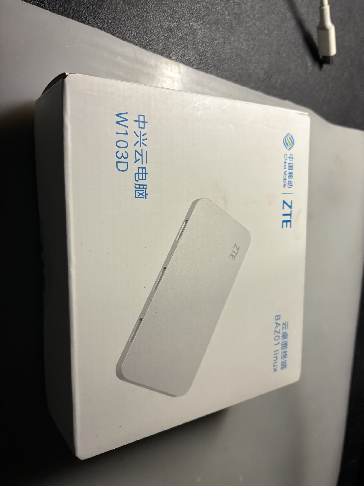
⚠️ 认准芯片。国科 GK6323、RK3566 的同名/同形盒子不适用——那份镜像的内核补丁与 WiFi 固件 是专门烘给 S905L3A-w103d 的。
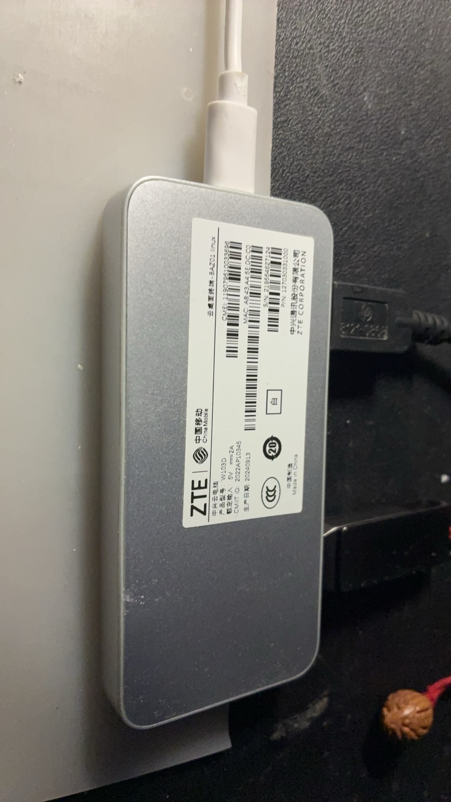
芯片叫法对照（别被卖家说晕）
| 你在哪看到 | 名字 |
|---|---|
| 卖家 / 线刷包 / 论坛 | 晶晨 S905X2 |
| ophub 板级库 / 本文档 | s905l3a |
| 设备树 / 平台 | meson-g12a（G12A 家族） |
三个说的是同一颗芯片的家族：S905L3A 属于 G12A，市面俗称 S905X2，ophub 钉的是具体变体名。 所以卖家说"S905X2"、而本文档说"S905L3A"，不矛盾 ✅
同族的几个兄弟型号（固件通刷）
中兴云电脑 W100D / W102D / W103D / W105D ← 论坛实测：这几款固件通刷| W100D（太极） | W105D（玲珑） | W103D（本指南） | W102D | |
|---|---|---|---|---|
| 芯片 | 晶晨 S905X2 | 晶晨 S905X2 | 晶晨 S905X2（=s905l3a） | 同类 |
| 内存 / 存储 | 2 G + 8 G | 2 G + 8 G | 2 G + 32 G | — |
| 系统 | 安卓 9 | 安卓 9 | 安卓 9 | 安卓 9 |
（W100D 与 W105D 的公开配置完全一样，差别在形态与命名：W100D 属"太极"、W105D 属"玲珑"名片式。）
"通刷"说明硬件几乎同源 ✅ 但存储差 4 倍（8 G vs 32 G）——本镜像装完约占 3 GB、载荷仅 145 MiB， 8 G 型号够用 ✅
关于无线网卡：论坛资料没有一款写明（四款都没写）。但"固件通刷"是一条支持性证据 —— 一份线刷包能同时驱动四款的 WiFi，说明它们多半是同一颗或兼容网卡 ✅（这是推断，不是确证 ⚠️）。 真要买之前，以实物为准：getprop 或拆机看丝印。
⚠️ 但有一处本指南无法替你确认：W105D/W100D 用的是不是同一颗 MT7663S 无线网卡（论坛资料没写）。 本镜像最难的部分正是 MT7663S 的驱动适配，这块不一样的话，WiFi 就要重新适配。 另外 ophub 的板级库里只有 W103D（s905l3a-w103d），没有 W105D 的条目——同族不等于配置可直接复用。
盒子上的口要认一遍（拍照存着，接线时省事）：
- 网口、HDMI、电源
- USB 口 ≥ 2：一个插 U 盘（走 U 盘路线时），一个给电台
- 复位孔（AV 孔里那个小按钮）——§5 的兜底手段要用
2. 准备清单
- W103D 盒子 + 原装电源
- ≥8 GB U 盘（会被完全擦除）
- 网线（必须——首启要联网）
- 电台 USB 线。FT-710 要插盒子/电台的上方
Enhanced口（不是 Standard 口） - 电脑（烧盘用）
- 原厂线刷固件包（兜底；走 U 盘路线时用不到，但建议先下载好放在手边）
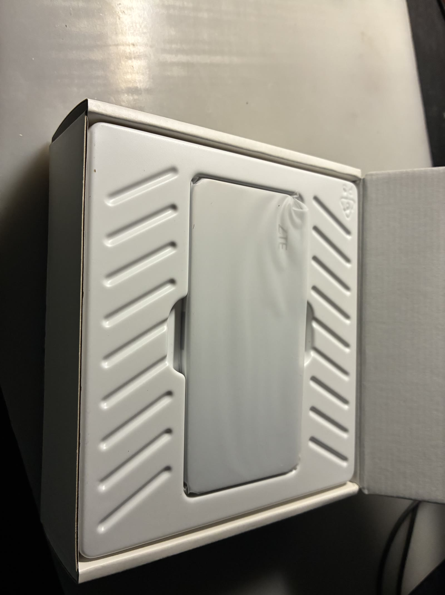
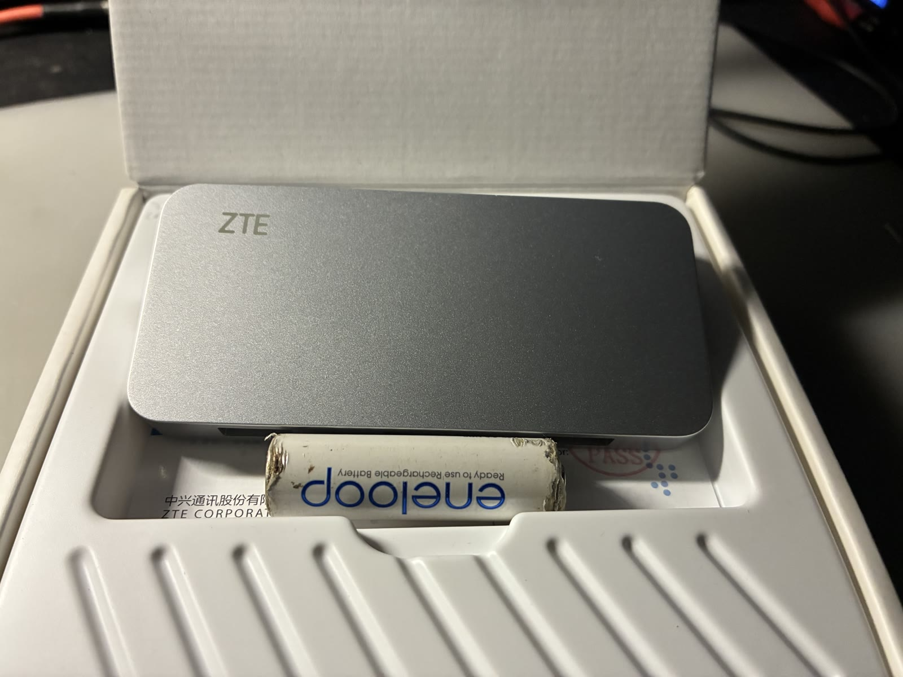
3. 下载镜像并校验
mkdir -p ~/w103d && cd ~/w103d
curl -LO https://www.vlsc.net/mrrc_modern/downloads/MRRC-Modern-1.25.5-w103d.img.gz校验（这一步别跳——1.07 GB 下坏了是能下坏的）：
# macOS
shasum -a 256 MRRC-Modern-1.25.5-w103d.img.gz
# Linux
sha256sum MRRC-Modern-1.25.5-w103d.img.gz| 字节数 | 1,154,545,271 |
| SHA-256 | 5d74f7378b64bd7ebff16528aa4b5222097de22b9f3b214fe1ccebc62dc8ffc1 |
两者都对不上就别往下走。先确认字节数（ls -l）——大小不对说明下载被截断了。
4. 烧到 U 盘
认准盘符，别烧错盘。（这一步会把目标盘整个擦掉。）
macOS：
diskutil list # 找到你的 U 盘，记下 /dev/diskN（N 是数字）
diskutil unmountDisk /dev/diskN
gzip -dc MRRC-Modern-1.25.5-w103d.img.gz | sudo dd of=/dev/rdiskN bs=4m
sync # 等它真的写完⚠️ 用 /dev/rdiskN（裸设备）不是 /dev/diskN——后者慢十倍以上。
Windows：用 Rufus 或 balenaEtcher，选那个 .img.gz（两者都能直接吃 gz）。 目标是"从镜像写入"模式，不是解压后复制文件。
Linux：
lsblk # 找盘
gzip -dc MRRC-Modern-1.25.5-w103d.img.gz | sudo dd of=/dev/sdX bs=4M status=progress conv=fsync烧完把 U 盘安全弹出（macOS：diskutil eject /dev/diskN）。系统可能提示"此磁盘无法读取"—— 那是正常的，镜像是 Linux 分区，Windows/macOS 读不懂。
4.1 让系统用满整根 U 盘（推荐，一条命令）
镜像的根分区只有 2.9 GB，而且不会在首启自动长（里面带 /root/.no_rootfs_resize）—— 所以 U 盘剩下的大片空间默认是闲着的。系统跑起来后在盒子上补一句就行，ext4 支持在线扩容， 不用停机、不用拔盘：
apt-get install -y cloud-guest-utils # 提供 growpart（镜像里没有这个包）
growpart /dev/sda 2 # 只改分区表尾，不动起始扇区
resize2fs /dev/sda2 # 文件系统跟着长
lsblk /dev/sda; df -h / # 2.9G → 整盘容量为什么要这一步：/ddbr 里的 eMMC 全盘备份约 2.3 GB（§17.1），根分区只有 2.9 GB 时 放不下；录音与日志也需要余地。实测（231 GB 的 U 盘）：growpart + e2fsck -f + resize2fs 之后 df 从 2.9G / 剩 894M 变成 227G / 剩 226G。
扩容不动 UUID —— uEnv.txt 与 /etc/fstab 里的 root=UUID=… 照旧有效。 （想先在电脑上扩也可以：Linux 上离线跑同一组命令；macOS/Windows 没有 ext4 工具，到盒子上做。）
想在烧盘后立刻核对写入是否正确（Linux / 有cmp的环境）： ``bash sync; echo 3 | sudo tee /proc/sys/vm/drop_caches >/dev/null # 让下面的读真的落到盘上 sudo cmp <(gzip -dc MRRC-Modern-<ver>-w103d.img.gz) /dev/sdX -n <镜像解压后字节数>`一致即"盘上这份 = 镜像那份"（1.26.0 实测IMAGE_MATCH_OK）。<镜像解压后字节数>用gzip -l MRRC-Modern-<ver>-w103d.img.gz` 看最后一行。
5. 让盒子从 U 盘启动（新机器最容易卡的一步）
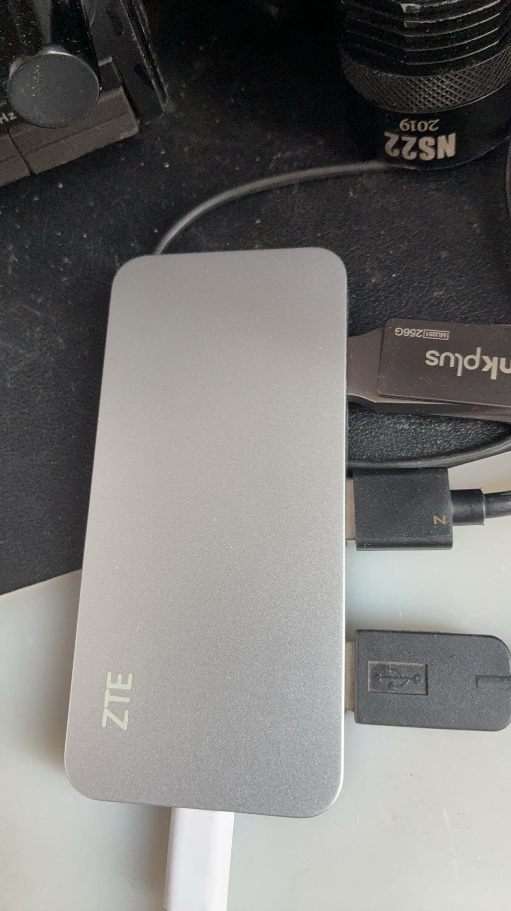
原理：已从镜像里核实，不是猜的
原厂安卓的 u-boot 有一个 update 模式。进去以后它会到 U 盘上找并运行 aml_autoscript——这个脚本就在镜像的启动分区里，内容是：
setenv bootcmd 'run start_autoscript; run storeboot'
setenv start_autoscript '... SD 卡 → USB(0..3) → eMMC ...'
setenv upgrade_step 2
saveenv # 写入 u-boot 环境
reboot它做的就是把启动顺序改成「先 U 盘/SD、再 eMMC」，存进 u-boot 环境，然后重启。 重启后 u-boot 从 U 盘加载 s905_autoscript → 读 uEnv.txt（里面写着本板的 FDT=/dtb/amlogic/meson-g12a-w103d.dtb）→ 引导 Linux 内核。
所以整件事的关键只有一条：让原厂 u-boot 进 update 模式。
⚠️ 更正一处说法
之前写「eMMC 一个字节不动」不准确——上面的 saveenv 确实会写 eMMC（写的是 u-boot 环境变量， 不是 Android 的分区数据）。
准确的说法：不碰 Android 的分区与数据，只改 u-boot 的启动顺序偏好。 回滚依然简单（见下）。
三种触发方式（按独立性排）
① 复位孔（最不依赖原厂软件，第一次建议用它）
- 断电，U 盘插好
- 用回形针按住复位孔里的按钮
- 通电，按住约 10 秒再松手
② adb（原厂安卓里打开了 USB/ADB 调试）
adb connect <盒子IP>:5555
adb shell reboot update③ 盒子上的终端 App
su -c 'reboot update'reboot update 就是让安卓把 u-boot 的 upgrade_step 置位——u-boot 下次启动看到它就运行 U 盘上的 aml_autoscript ✅
成功的样子
HDMI 上是 Linux 内核日志（不再有安卓开机动画）。因为 uEnv.txt 里配的控制台是 console=ttyAML0,115200n8 console=tty0——串口和 HDMI 都能看，所以刷机失败时接上 HDMI 就能看到卡在哪 ✅
第一次开机要几分钟：扩 rootfs、生成 SSH 密钥。
回滚：断电 → 拔 U 盘 → 上电。u-boot 在 U 盘上找不到脚本，走 eMMC → 回安卓。 （u-boot 环境里那条“优先 U 盘”的偏好还在，但没有 U 盘时它是无害的。）
6. 首启会自动完成什么
镜像里已经烘好了不需要硬件的全部东西（用户、代码、venv、依赖、frpc、FTDI 库、11 份机型配置、systemd 单元）。 首启只做必须碰硬件的几件事：
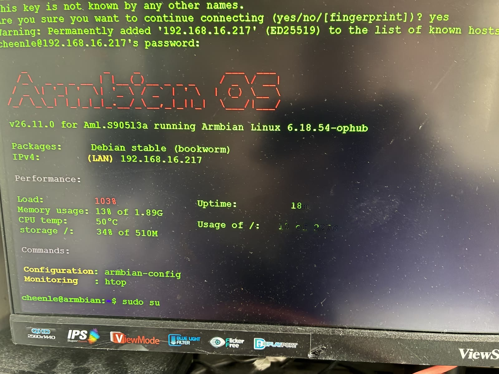
| 首启做 | 为什么不能提前做 |
|---|---|
| 生成 Web 登录口令 | 每台机器应当不同；写死在镜像里等于公开口令（发货版例外：卖家在构建期固定，见 §7） |
| 生成自签证书 | 证书要绑定本机名/IP，且私钥不该随镜像分发 |
探测串口（/dev/ttyUSB / ttyACM） | 端口号只有在真机上插了电台才知道 |
| 探测声卡（电台的 USB 声卡） | 同上 |
首启不需要联网：上面几件事全在本机完成（生成/写入口令、自签证书、探测串口与声卡）， 不下载任何东西。开机后 mrrc-firstboot.service 跑完会把自己标记成"已做"，之后不再重复 （没定型时不会标记，见下）。
2026-10-17 更正（对 1.28.1 产物的只读检查）：上表里两条探测在 1.28.1 及更早的镜像上从未运行过 —— 包装器在“env 文件存在”（即所有镜像）那条分支上带MRRC_PRESEED=1调first_run.py，而那个键在第一行 就短路返回。口令也不是首启生成的，而是服务启动时server.py生成的。本版起两条探测真的会跑，且完成 判据改成“配置已定型”（needs_first_run为假、且记下的串口节点在场）：没插电台的盒子下次开机再探一次， 探到为止。顺带一个不在本次范围内的现状：/setup的免密引导窗口（§9.8）同样因为“口令已存在”而 从未打开过；改它等于重新开一个免口令窗口，是安全决策，另开一次变更处理。
首次上线有两条路：最省事是插网线（eth0 默认 DHCP，插上就拿地址，见 §9.2）；没有网线时， 刷盘前在 FAT 启动分区写一份 /boot/mrrc-wifi.txt（SSID=/PSK=），首启会用它把盒子连上 Wi-Fi 并删掉这个文件（见 §9.3）。两个都不可用时，接 HDMI + USB 键盘在盒子上用 nmtui 直接连 （§9.4）。⚠️ 曾经用于这一步的开放热点已在 W103D 上退役：MT7663S 起得来 AP 却不发信标， 手机扫不到，2026-10-11 真机验证失败（详见 §9.6）。
7. 进系统，第一件事改口令
从路由器 DHCP 列表里找到盒子的 IP，然后：
ssh root@<盒子IP> # 出厂口令 1234（ophub Armbian 的默认值）进去第一件事就改掉它：
passwd root⚠️ 出厂 root/1234 是公开知识，不改等于把盒子送人。
口令一览（初始值都在这里，别去别处找）
| 用途 | 出厂 / 初始值 | 怎么拿、怎么改 | 注意 |
|---|---|---|---|
SSH root | 1234（ophub Armbian 出厂值） | passwd root | 公开知识，第一件事就改 |
| Web 登录 | 首启当场生成，每台不同 | mrrc-show-password（必须 root 跑）；首启 HDMI 横幅也印一次；也可在 /settings 页面改 | 改口令会关掉免密引导窗口（§9.8） |
| 收听专用 | 空＝未启用 | 自己写 MRRC_LISTEN_PASSWORD（§13） | 只读访客：能听、能改频率，不能发射 |
| Cloud Hub | 无，要自己申请 | 界面「设置 → Cloud Hub」apply → 等批准 → connect（§14） | 与呼号绑定 |
| Wi-Fi | 无 | /boot/mrrc-wifi.txt 预置（§9.3）、/settings 页面（§9.8）、或 nmcli（§9.4） | 只连 2.4 GHz（§9.8） |
镜像里不含任何密钥：Web 口令与自签证书都是首启在盒子上现生成的（见开头第 2 条前置说明）。
发货版（--preflash）的三条固定口令
卖家代刷、快递给用户的盒子用另一条构建通道：bash packaging/box/build-image.sh --preflash。 它把下面三条固定下来，用户开箱不需要任何初始化（插上电、浏览器登录即可）：
| 用途 | 发货版初始值 | 怎么改 |
|---|---|---|
SSH root | abcd1234 | passwd root（SSH/HDMI），或构建时 MRRC_PREFLASH_ROOT_PASSWORD=… |
系统用户 mrrc | abcd!1234 | passwd mrrc，或构建时 MRRC_PREFLASH_USER_PASSWORD=… |
| Web 登录 | abcd!1234 | /settings 页面的「登录口令」，或构建时 MRRC_PREFLASH_WEB_PASSWORD=… |
同一通道还会把时区定为 Asia/Shanghai、区域定为 zh_CN.UTF-8（可用 MRRC_PREFLASH_TIMEZONE / MRRC_PREFLASH_LOCALE 覆盖）。默认关：不传 --preflash 的镜像一字不改，口令照旧每台现生成。
⚠️ 固定口令就是公开知识：拿到镜像或任何一台同批盒子的人都能进同批的所有盒子。这是“先固定”的 已知代价；Web 口令在页面上能改，root/mrrc 要改得上 SSH 或 HDMI。
8. 拿到 Web 口令，打开界面
mrrc-show-password这个命令必须用 root 跑——口令存在一个 0640 root:root 的文件里。
首启时 HDMI 控制台的横幅上也会印一次；之后想不起来就用这个命令取回。
浏览器打开：
https://<盒子IP>:8888自签证书会警告一次 → 高级 → 继续前往。
⚠️ 必须走 HTTPS，不要关。 手机浏览器要调用麦克风发射（PTT），而在 HTTP 下浏览器不给麦克风权限—— 这是浏览器安全策略，不是我们的设置问题。
登录后你应该看到主界面：频率、模式、S 表、瀑布图。这时候还没有电台——下一步接上。
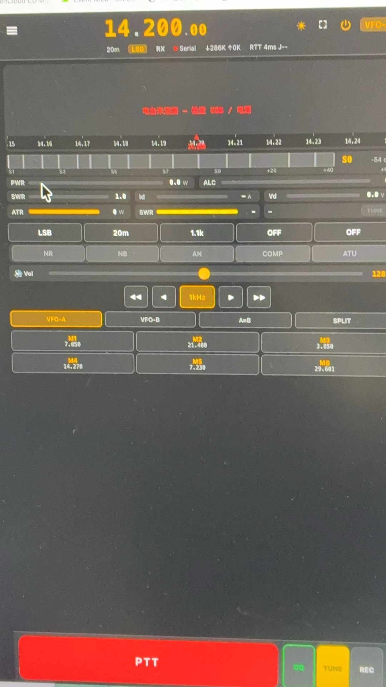
9. 接网络（有线 / Wi-Fi）
⚠️ 这条的第一版是「盒子自己开热点」，它在 W103D 上真机验证失败（2026-10-11） —— MT7663S 的驱动能把 AP 模式激活（系统日志一切正常），但信标不上空，手机扫不到MRRC-Setup。现在的版本是「盒子接入你的局域网 → 打开网页配置盒子 OS」：首次上线走 网线（§9.2）或预置 Wi-Fi（§9.3），没有网线也没预置时用 HDMI +nmtui（§9.4）。热点的 退役说明见 §9.6（设计见 2026-10-11 的 LAN 盒子设置页 spec）。
9.1 按你手边有什么选
| # | 你手边有 | 方式 | 现在能用吗 |
|---|---|---|---|
| 1 | 一根网线 | 直接插网线（最省事） | ✅ 能用 → §9.2 |
| 2 | 电脑 + 读卡器 | 预置：刷盘前把配置写进启动分区 | ✅ 能用 → §9.3 |
| 3 | HDMI + USB 键盘 | nmtui：盒子上的全屏文字界面 | ✅ 能用 → §9.4 |
| 4 | 只有一台手机 | 热点引导：盒子自己发热点 | ❌ 已退役（2026-10-11 真机验证失败）；改用预置 Wi-Fi（§9.3）或网线（§9.2） |
⚠️ 预置分两份文件、各写各的域：口令与电台设置走 /boot/mrrc.env（§9.3），Wi-Fi 凭据走 /boot/mrrc-wifi.txt —— Wi-Fi 归 NetworkManager 管，不写进 env 文件（设计 D-4：两个域各有 唯一写入者；env 文件会被复制进 0640 的配置层、可能进支持包，Wi-Fi 密码不能和配置键混在一起）。 两份都用得上时同时写即可。（第 4 条本板已退役，见 §9.6。）
接上网络之后，盒子的名字、时区、Wi-Fi 切换、有线口、重启都在局域网配网页上做（§9.8）， 不必回到 HDMI 控制台。
9.2 第 1 条：网线（推荐）
插上就通，确认一下：
ip a # 看有没有拿到地址
nmcli device status # eth0 应显示 connected9.3 第 2 条：预置（刷盘时就写进去，零键盘零网线）
镜像的 FAT 启动分区会被挂到 /boot（在别的电脑上打开，macOS 上那个分区叫 BOOT， 直接拖文件进去也行）。这里可以放两份文件，各写各的域：
① 电台与口令 → /boot/mrrc.env：首启会采纳它并改名成 mrrc.env.applied。支持任意 MRRC_* 键（就是 §13 那张表里的那些）✅
cat > /Volumes/BOOT/mrrc.env <<'EOF'
MRRC_WEB_PASSWORD=你自己定一个
MRRC_RADIO_MODEL=ft710
MRRC_PTT_MAX_TX_SECONDS=120
EOF② Wi-Fi 凭据 → /boot/mrrc-wifi.txt：让盒子没有网线也能自己连上 Wi-Fi。两行， 键名不分大小写，值两端的空格与 Windows 编辑器留下的 \r 会被去掉：
cat > /Volumes/BOOT/mrrc-wifi.txt <<'EOF'
SSID=我的WiFi
PSK=密码
EOF首启时 mrrc-wifi-preseed.service 会读这个文件、用 nmcli 连上那个 Wi-Fi，然后把文件删掉 （FAT 没有权限位，明文 PSK 不能一直躺在卡上）。它刻意与 mrrc.env 分开：Wi-Fi 是 NetworkManager 的领域，不走 MRRC_* 配置层——env 文件会被复制进 0640 的配置层、可能进支持包， 一条 Wi-Fi 密码一旦落进那儿就和配置键混在一起了（设计 D-4）。这也是文件名用 .txt 而不是 .env 的原因：别把两份文件弄混。
Guided/发货流程不用预置这条路（2026-10-17 起）：实际流程是刷完 eMMC → 上电 → 插 LAN 线 → 在 /settings 页面里改 Wi-Fi（§9.8），那已经是零键盘的一条路；预置能力仍在镜像里， 将来想用随时可用，只是操作单不再要求它。
⚠️ 这条只在"镜像刷到 U 盘/SD 卡"时成立：把系统写进 eMMC 时没有用户能碰到的 FAT 分区 （§17 的 eMMC 路线不适用预置）。
连上以后想确认，接 HDMI 看控制台，或 SSH 进去看：
journalctl -u mrrc-wifi-preseed -b # 连上后该 unit 应显示文件已删、网络已就绪9.4 第 3 条：HDMI + nmtui（没有任何网络时最省事）
盒子接 HDMI + 一个 USB 键盘，登录 root / 1234，然后：
nmtui方向键选「启用连接 / Activate a connection」→ 选你的 SSID → 输密码。 这是全屏文字界面，既不需要网络也不需要图形环境 ✅
已经在 SSH 里（有网线）就用 nmcli：
nmcli device status # 先看 wlan0 在不在
nmcli device wifi list # 扫（要等几秒）
nmcli device wifi connect "你的SSID" password "你的密码"
nmcli connection show --active # 确认连上了
ip a show wlan0 # 拿到 IP 没盒子换了网络导致 IP 变了，就去路由器里重新找一下。
9.5 无线起不来时，按顺序查
每一条排除的东西都不一样，别跳步：
| 检查 | 命令 | 说明 | |
|---|---|---|---|
| 硬件在不在 | rfkill list | 显示 Soft blocked: yes → rfkill unblock wifi；看不到 wlan0 才往下查 | |
| 驱动加载没 | `lsmod \ | grep mt76` | 应有 mt7663s 与 mt76_sdio；没有就 modprobe mt7663s |
| 固件加载成功没 | `dmesg \ | grep -i mt76` | 有 firmware 失败字样 = 固件没加载上（本镜像带 4 个 mt7663 固件） |
| 网卡认出来没 | iw dev | 应列出 wlan0 | |
| 扫描有结果没 | nmcli device wifi list | 空列表且 dmesg 里有 mailbox write … failed: -110 → 芯片楔死了，按右列重启；空列表但无报错 → 天线或信道问题 | |
| 芯片是否还活着 | `dmesg \ | grep -c "mailbox write"` | 计数 > 0 = 已楔死，重启（钉版固件实测软重启 47 秒即复位，见 §20.5）；连接期间别再选 5 GHz |
| 监管域 | iw reg get | 显示 country 00 时部分信道不可用；iw reg set CN 后重试 |
背景（决定你该查什么）：W103D 的无线是 MT7663S，WiFi 与蓝牙同一颗芯片，走 SDIO 而不是 USB。这块板的驱动是 ophub 专门适配的（上游 PR #3658 / #3659），所以 内核绝不能换——换通用内核 = 静默丢 WiFi（见 §19 红线③）。
设计上能用，但当前已发布镜像上不稳：这份镜像带的还是 linux-firmware 的 2020 版 N9 固件，会渐进式挂死（见 §20.5；出厂 2021 版固件已钉进仓库，下个镜像修复）。而且无论哪版， 无线抖动都大，长时间听音频容易卡。实时音频始终优先走有线。
固件状态（决定你该期待什么）：1.26.0 起镜像带的是出厂 2021 版 N9 固件 （7663mp1827，见 §20.5）；线上下载的 v1.25.5 镜像还是没有，那份会渐进式挂死。 2026-10-12 在 1.26.0 真机上实测：2.4 GHz 下关联、上网、拿 IPv6、NTP 全通，扫描正常且扫完芯片不挂； 5 GHz（ch149）能关联、能拿到 DHCP 地址，但数据面是死的，约 100 秒后 MCU 开始超时（详证见 §20.5）。 结论：无线只用来配网，实时音频始终优先走有线。
9.6 第 4 条：热点引导（已退役）
⚠️ 2026-10-11 真机结论：这条路在 W103D 上走不通，已退役。 原因是硬件边界，不是 软件没写完：MT7663S 的驱动与 NetworkManager 都报 AP 已激活（COMPLETED、10.42.0.1/24就位、零报错），但信标不上空，手机与 Mac 都扫不到MRRC-Setup（源码走查：mt7615_ops没有start_ap，mac80211 缺 op 时静默返回成功）；折腾 AP 还会把驱动楔死，只能断电复位。 换prefer_offload_fw=0会改载_rebb固件，芯片则根本不初始化：MCU initialization failed: -110。上游移植记录本身也只验证过 STA 模式。
为什么改成局域网页面：一个谁也扫不到的热点，比没有引导更糟。现在「上线」这一步交给 你自己已经在用的网络——插网线（§9.2）或刷机时预置 Wi-Fi（§9.3），然后用任意设备打开 https://<盒子地址>:8888/：未配置的盒子会落到引导页 /setup，先设登录口令，再从页面 列出的 Wi-Fi 列表里选一个连上去；之后一切在 /settings 设置页。
首次开机请在你信任的网络里完成设置。 引导页在"盒子从未被用户设过口令"期间，对同一个 子网内的请求免口令开放（网线/预置通常发生在家里私网）。宿舍网、公司网、咖啡馆这类共享 网络存在"被同网段的人抢先设口令、接管盒子"的风险——这是为了"买回来只有一台手机的人也能 开始"而接受的明知的弱化，不是缺陷。
被退役的实体：MRRC-Setup 热点、10.42.0.1 地址、30 分钟窗口与它的重试行为、 mrrc-setup-ap.service 与 linux/setup_ap.py、以及 /run/mrrc/setup-ap/state.json 和 wizard.json 两个跨用户信箱。设计见 docs/superpowers/specs/2026-10-11-w103d-lan-box-settings-design.md。
9.7 盒子名字与 mDNS
盒子在局域网里有一个名字，默认 MRRC-Modern（打包时用 hostnamectl set-hostname 落下， 否则镜像里还是 armbian）。于是你可以直接在浏览器里用 https://MRRC-Modern.local:8888 这样 的地址找到它，不必先去路由器后台翻 IP。
自称 MRRC-Modern-2.local。设置页 /settings 显示当前实际可达的那个名字；同网段有 多台盒子时，建议在页面上给它们各改一个名字。
Android 看机型。所以退路是 DHCP 主机名（NetworkManager 默认会把它报给路由器）：无论 什么客户端，去路由器后台的客户端列表里按主机名就能找到盒子的 IP。设置页两个都显示： mDNS 名字 + 当前 IPv4。
同步 /etc/hosts）。
- 多台同网段会撞名：avahi（Linux 上的 mDNS 实现）发现
MRRC-Modern.local已被占用时，会 - 大小写：
MRRC-Modern含大写，但 DNS 名字本身大小写不敏感——mrrc-modern.local一样能解析。 <名字>.local不是万能的：iOS / macOS 完美，Windows 需要装 Bonjour（否则解析不了），- 改名字：
/settings→ 盒子身份，填新名字提交（走 root helper 的set-hostname，会一并
9.8 局域网配网页：/setup 与 /settings（1.26.0 新增）
盒子接入你的网之后，用任意设备的浏览器就能把盒子的系统配置完 —— 不用 HDMI、不用键盘。 地址就是平时那个，自己会被路由到对应页面：
| 页面 | 地址 | 干什么 |
|---|---|---|
| 引导页 | https://<盒子IP>:8888/setup | 首次上线：设登录口令 + 从扫到的列表里选 Wi-Fi |
| 设置页 | https://<盒子IP>:8888/settings | 盒子身份（名字 / mDNS / 当前地址 / 时区 / 重启）、网络体检、Wi-Fi（扫描 + 手输 SSID + 连）、有线口（DHCP / 静态）、公网入口（填呼号申请，见下） |
| 主界面 | https://<盒子IP>:8888/ | 电台控制（平时用的那个） |
引导窗口只在"盒子从未被用户设过口令"期间开放：首次开机它对你同一子网的请求免口令； 一旦设过一次口令（比如你在页面上改了，或者 MRRC_WEB_PASSWORD 已存在），/setup 就 302 跳到 /settings，此后所有页面一律要登录。所以：
首次开机请在你信任的网络里完成设置（家里私网）。宿舍网/公司网/咖啡馆这类共享网络存在 "被同网段的人抢先设口令接管盒子"的风险——这是为了"买回来只有一台手机的人也能开始"而 接受的明知的弱化（设计见 §9.6 引的那份 spec）。
Wi-Fi 面板的三条硬约束（2026-10-12 真机；第一、二条 2026-10-17 有更新）：
MCU mailbox 超时（-110），此后扫描返回空表、Wi-Fi 彻底没法用（详证见 §20.5）。
它带入这个框。所以隐藏网络、以及“芯片刚重启、扫描返回空表”这两种情况都有出路了。 密码框旁的「显示/隐藏」只切换输入框的显示方式，不改变值。已保存的 Wi-Fi 密码不会回显 —— 那需要向 NetworkManager 索要明文口令，而“Wi-Fi 密码只进 nmcli 的 argv”是这套系统的一条硬约束（NFR-068）。
判断芯片状态的旁证仍是：nmcli device wifi list 与 dmesg | grep -c "mailbox write"。
- 只连 2.4 GHz。 5 GHz 能关联、能拿到地址，但数据面不通，而且会把 MT7663 拖到
- 可以直接手输 SSID（2026-10-17 起）：面板上那格「网络名（SSID）」就是输入框，点扫描结果会把
- 扫不到任何网络时页面会给一句提示（2026-10-17 起；以前是一片空白，看起来像“没点对”）。
「公网入口」面板（2026-10-17 新增）：填上呼号 → 点「申请公网入口」→ 状态行告诉你“已提交，等待批准”； 运维在门户批准后，盒子自己会接通（服务端每 30 s 轮一次），页面不用开着。接通后面板显示入口地址 （https://<label>.mrrc.vlsc.net/）。两条要记住的边界：改呼号 = 重新申请（旧入口不会自动迁移）； 已申请过的盒子按钮会变成「查询状态」—— 门户对同一呼号的重复申请是查重拒绝的（要换人或转移走申诉）。 联系人、批准码认领、隧道/证书细节仍在主界面 ☰ 菜单的「Cloud Hub」对话框里（§14）。
网页只监听 IPv4（盒子线的设计取舍）：
ss -ltn | grep 8888 # 0.0.0.0:8888 → IPv4 通、IPv6 不通
# [::]:22 → SSH 两边都通所以盒子就算拿到了全局 IPv6，https://[<它的IPv6>]:8888 也打不开（直连 IPv6 只能 SSH）。 想让它也听 IPv6，改一行就行（:: 是 dual-stack，IPv4 照旧能连）：
sed -i 's/^MRRC_WEB_HOST=.*/MRRC_WEB_HOST=::/' /opt/mrrc_modern/env/mrrc.env
systemctl restart mrrc-modern
ss -ltn | grep 8888 # 现在应是 [::]:8888不要反复点扫描：正常一次就够。如果列表是空的，先看 dmesg 判断是芯片挂了还是真没网， 而不是继续点（芯片挂的时候点也没用，只有重启能恢复）。
10. 接电台
FT-710 的线插口别搞错：用上方 Enhanced 口，它同时承载 CAT 串口和 FT4222 scope。 插 Standard 口的话 CAT 可能通但没有真频谱。
接好后确认三样东西都出现了：
ls -l /dev/ttyUSB* /dev/ttyACM* # CAT 串口
arecord -l # 电台的 USB 声卡（RX）
aplay -l # 播放设备（TX）⚠️ 这三样一样都不能少。少串口 = 没有 CAT 控制；少声卡 = 没有声音。
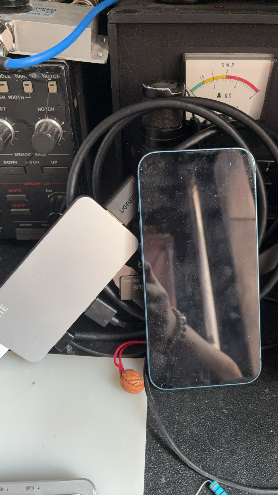
11. 选机型
mrrc-radio list # 11 个型号，带 ✅已验证 / ⚠实验性已验证的三个：ft710、ic7300、ic7300mk2。其余 8 个是实验性（默认只收不发，见下）。
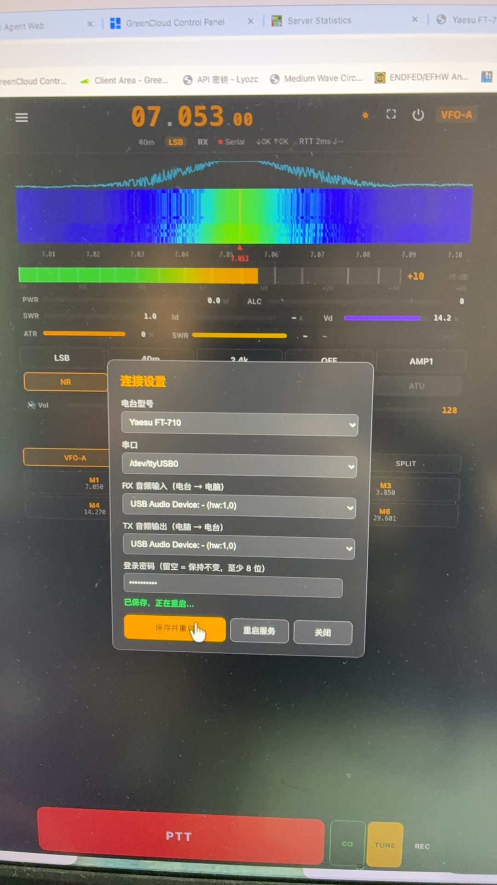
mrrc-radio use ft710 # 自动探测串口 → 写配置 → 重启服务
mrrc-radio use ic7300 --port /dev/ttyACM0 # 或者你直接指定端口
mrrc-radio show # 核对当前生效的配置use 做了四件事：停服务 → 探测串口（真发包问电台）→ 写配置 → 起服务。 所以它需要电台是开机状态。
换机型时旧串口会被自动清掉。 FT-710 是ttyUSB0/1、IC-7300 是ttyACM0—— 留着上一个型号的串口等于配了一条没有报错的死链路。
关于 8 个实验性机型（重要）
ic705 ic7610 ic7760 ftdx10 ftdx101d ftdx101mp ftx1 ft891 —— 这些机型的指令表来自 Hamlib 与设备手册，不是真机实测。默认只收不发。
（在镜像里看得出来：这三个已验证机型的 profile 根本不写 MRRC_ALLOW_UNVERIFIED_TX 这一行， 而那 8 个都显式写着 =0——默认是安全的，要发射得主动改。）
理由（AD-019）：在没有实测过的频率/功率语义上发射，对电台和天线都不好。
要发射必须显式开门：
vi /opt/mrrc_modern/env/mrrc.env # 加一行 MRRC_ALLOW_UNVERIFIED_TX=1
systemctl restart mrrc-modern换回已验证机型时这个键会自动重置为 0，不会带着开着。
12. 验收：确认"真的能工作"
scp packaging/box/verify.sh root@<盒子IP>:/tmp/
ssh root@<盒子IP> 'bash /tmp/verify.sh'12 项，每项失败都会给出排查命令。先跑这个，再动手调别的。
| 项 | 查什么 |
|---|---|
| 1/12 | 有线网络（nmcli device status） |
| 2/12 | 电台串口（/dev/ttyUSB / ttyACM） |
| 3/12 | 电台 USB 声卡（arecord -l） |
| 4/12 | Python 与依赖 |
| 5/12 | 服务在跑 |
| 6/12 | 8888 上的 HTTPS 真的在应答（只看有没有应答，不看证书是否受信——自签证书本来就不受信） |
| 7/12 | 配置一致性（设计 D-11：EnvironmentFile 与 MRRC_CONFIG_FILE 同一文件） |
| 8/12 | Cloud Hub 隧道客户端（fleet/frpc） |
| 9/12 | Cloud Hub 公网入口（未接入时自动跳过） |
| 10/12 | PTT 安全上限（MRRC_PTT_MAX_TX_SECONDS 有值） |
| 11/12 | 盒子身份与权限通道（NM polkit 规则、avahi-daemon/hostname.local 解析、mrrc-box-helper 套接字——LAN 引导页写网络全靠它们） |
| 12/12 | WiFi N9 固件（必须是出厂 2021 版，SHA 223f73f1…——linux-firmware 的 2020 版会渐进式挂死 WiFi，见上面 MT7663 固件节） |
前 3 项就是硬件三件套。第 7 与第 10 项都是“没有报错也会出问题”的那类：第 7 项不合格时界面会显示 “已连接”而公网 TLS 校验失败；第 10 项没值时少一道防线①/② 中的第②道。
第 11 项查的是"出问题时你还能不能找到这台盒子、网页还能不能写网络"—— <hostname>.local 解析、NM 授权规则、box-helper 套接字都在，LAN 引导页才玩得转； 因为出问题的时刻你正好连不上盒子、没法查。第 12 项只认出厂 2021 版 N9 固件： 当前已发布的 v1.25.5 镜像（5d74f737…）还是 2020 版，这一项会红—— 现场换法见 §20.5。
软重启能不能救活芯片？2026-10-12 修正：钉版固件下能。 老结论（“必须断电”）来自 2020 版固件的年代，当时实测“软重启继承挂死态”；换成钉版 2021 后实测软重启 47 秒即完整复位 （N9 Firmware Version 重新打印、mailbox 报错归零、扫描恢复）。拿不准时先软重启，不行再断电。
2026-10-11 固化到 eMMC 那一轮的实测判读（自建镜像，版本串同为 1.25.5）：第 12 项绿 （7663mp1827，2021 版）；第 11 项红 —— 该镜像构建于 10-11 中午，早于box_helper/ NM polkit 规则 /avahi-daemon落地，三件都不在，不是盒子故障，要用上得重刷含它们的镜像；第 9 项红是判定偏严： 公网入口未登录时返回 302（跳/login）就是正常应答，脚本目前只认 200/401。
然后实际用一次——打开界面，调频率、看瀑布、按 PTT 说一句。这才是真的验收。
13. MRRC 的全部可调项
配置文件：/opt/mrrc_modern/env/mrrc.env。改完 systemctl restart mrrc-modern 生效。
| 变量 | 作用 |
|---|---|
MRRC_WEB_PASSWORD | Web 登录口令（首启生成；想自己定就写这里） |
MRRC_LISTEN_PASSWORD | 收听专用口令：用它登录是只读访客（能听、能改频率/模式，不能发射、不能改设备设置）。留空=不启用 |
MRRC_WEB_PORT / MRRC_WEB_HOST | 监听端口（默认 8888）/ 绑定地址 |
MRRC_RADIO_MODEL | 当前机型（用 mrrc-radio use 改，别手改） |
MRRC_SERIAL_PORT / MRRC_BAUD_RATE | CAT 串口与波特率（同上，让 mrrc-radio 管） |
MRRC_ALLOW_UNVERIFIED_TX | 未验证机型的发射门禁（§11） |
MRRC_PTT_MAX_TX_SECONDS | 发射时长上限（镜像默认 120）——防线② |
MRRC_REMOTE_SESSION_TX_HEARTBEAT_S | 会话活性闸门；Cloud Hub 接入后自动写 5——防线① |
MRRC_SCOPE_PORT / MRRC_SCOPE_BAUD | FT-710 的 FT4222 scope 串口 |
MRRC_FTDI_LIB_DIR | FTDI 库目录（镜像里已预置 aarch64 版本） |
MRRC_RX_BUFFER_MS | 接收音频的宿主缓冲深度（毫秒，默认：盒子/其他 Linux 100，macOS/Windows 20）。见下方「声音卡顿」 |
MRRC_AUDIO_RX_DEVICE / MRRC_AUDIO_TX_DEVICE | 指定音频设备（多声卡时有用） |
MRRC_RECORDINGS_DIR | 通联录音目录（服务端存 MP3） |
MRRC_RECORDINGS_MAX_SESSION_MIN / MRRC_RECORDINGS_BITRATE | 单次录音时长上限 / 码率 |
MRRC_RECORDINGS_MIN_FREE_MB | 剩余空间低于此值（默认 200）拒绝开始录音；0 关闭。只拒绝、从不删除已有录音 |
MRRC_ATR1000_HOST / MRRC_ATR1000_PORT | ATR-1000 天调的地址（§15） |
MRRC_SESSION_METRICS_INTERVAL_S | 会话遥测上报间隔（默认 300 秒，0=关） |
常用场景：
# 给朋友开一个"只能听"的入口
echo 'MRRC_LISTEN_PASSWORD=换个好记的' >> /opt/mrrc_modern/env/mrrc.env
systemctl restart mrrc-modern
# 之后访问 https://<盒子IP>:8888/listen 用这个口令登录
# 发射时长上限调长一点
sed -i 's/^MRRC_PTT_MAX_TX_SECONDS=.*/MRRC_PTT_MAX_TX_SECONDS=300/' /opt/mrrc_modern/env/mrrc.env
systemctl restart mrrc-modernMRRC_RX_BUFFER_MS（声音卡顿才需要动）：接收方向的采集缓冲深度。盒子上的 USB 声卡（ALSA）只给 1–2 个 20 ms 周期，读得稍慢就溢出；溢出之后采集接口会静默停摆 （PyAudio 仍报流是开的、内核也不报错），于是声音先被切碎、随后彻底安静。镜像默认已经 给到 100，调大可换稳定性、代价是延迟：
sed -i 's/^MRRC_RX_BUFFER_MS=.*/MRRC_RX_BUFFER_MS=200/' /opt/mrrc_modern/env/mrrc.env
systemctl restart mrrc-modern # 判定：journalctl -u mrrc-modern | grep -i "capture stalled"14. 公网接入（Cloud Hub）
让盒子在公网可用（https://<呼号>.mrrc.vlsc.net/，例：https://bg1sb.mrrc.vlsc.net/）。界面上 设置 → Cloud Hub：
- MRRC_SSL_CERT / MRRC_SSL_KEY（这个机型的入口证书） - MRRC_REMOTE_SESSION_TX_HEARTBEAT_S=5（防线①：PTT 半开时自动释放）
- apply：填呼号 + 联系方式，提交申请。
- 等批准。
- connect：自动完成——签证书、enroll、写隧道配置、起 frpc，并自动写两个配置键：
之后用 https://<呼号>.mrrc.vlsc.net/ 访问（例：https://bg1sb.mrrc.vlsc.net/）。
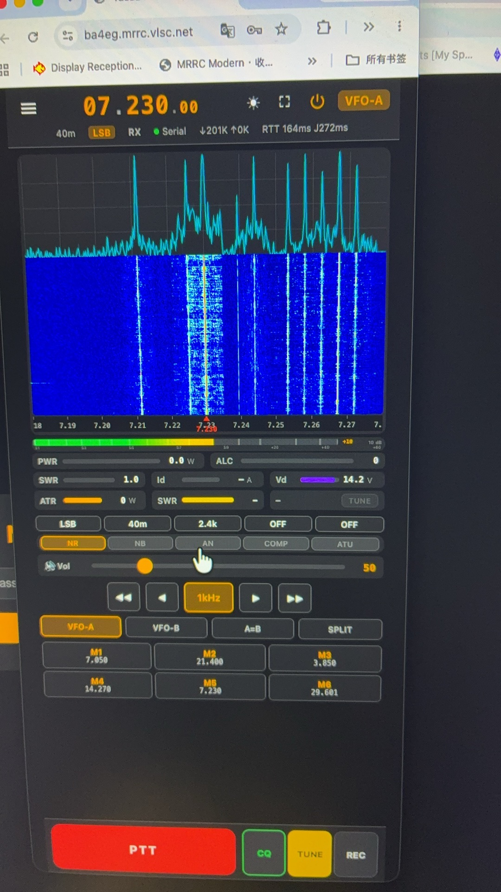
两条 PTT 防线互相独立，都要在：防线①＝会话活性闸门（公网必经），防线②＝时长上限（MRRC_PTT_MAX_TX_SECONDS）。 公网路径下 NAT 掉表、换 Wi-Fi、静默丢包都不会产生"断线"，只有这两条能兜住。
15. 天调 ATR-1000（可选）
盒子支持 ATR-1000 自动天调。配好地址就能用：
cat >> /opt/mrrc_modern/env/mrrc.env <<'EOF'
MRRC_ATR1000_HOST=<天调IP>
MRRC_ATR1000_PORT=<端口>
EOF
systemctl restart mrrc-modern配好之后：发射中驻波超阈值会自己发一次完整调谐（一次，不是反复试），调谐有效才写回学习库。 它绝不自行键控电台——触发前提是操作者自己在发射。
16. 日常运维
日志：
journalctl -u mrrc-modern -n 100 --no-pager # 服务日志
tail -f /opt/mrrc_modern/logs/server-stdout.log # 服务 stdout升级：
MRRC_UPDATE_SRC=<git url 或本地目录> mrrc-update只做四件事：拉代码 → 装依赖 → 盖版本号（version.txt/VERSION）→ 重启。配置不会被碰。没有自动回滚——升级前先备份（下面）。
热升级只换代码，不装 systemd 单元。 服务层（mrrc-service-layer.sh）里的单元和 系统集成只有镜像构建时装：mrrc-box-helper（设置页的 Wi-Fi/系统面板）、mrrc-localctl（蓝牙遥控器）、mrrc-cpufreq（锁频）、mrrc-logrotate.timer（日志轮转）。升级前就 没有它们的盒子，升级后仍然没有 —— 表现是/api/box/status报helper_available: false、 设置页那几个按钮是灰的。要补就按packaging/common/mrrc-service-layer.sh里的单元原文 手装一次（并把RuntimeDirectory=mrrc加进mrrc-modern.service，否则/run/mrrc建不出来）， 然后daemon-reload+enable --now。
备份（升级前做）：
tar czf /root/w103d-backup-$(date +%F).tgz \
/opt/mrrc_modern/env/ /opt/mrrc_modern/mem_channels.json /var/lib/mrrc/（/opt/mrrc_modern/env/ 里有口令与 Cloud Hub 证书路径。这份备份含私钥，别乱放。）
手动装机内容检查：
bash /tmp/verify.sh # §12 那份，随时可重跑17. 写进 eMMC（推荐的最终形态）
U 盘路线跑通、验收过了就做这一步 —— 它是推荐的最终形态：盒子 + 一根电源线 + 一根网线， 不再需要 U 盘，28.9 GB eMMC 全归它自己。这一步会覆盖 eMMC；做法是在跑着的 U 盘系统里执行 ophub 自带的安装器，它把当前系统克隆进 eMMC 并自动处理引导 —— 不需要线刷工具、不需要重打镜像。
2026-10-11 在真机上完整走了一遍：盒子现在就从 eMMC 启动（findmnt /=/dev/mmcblk2p2， 28 GB 全用上），原厂引导逐字节保留。下面每一步都是那一次的实操记录。
17.1 先备份（务必先做）
armbian-ddbr # 交互里选 b全盘（29 GB，含原厂引导）压到 /ddbr/BACKUP-arm-64-emmc.img.gz（实测 2.2 GB），留在 U 盘上别删。
单线程 gzip 在这块 SoC 上约 10 MiB/s（≈40 分钟）；先装 pigz 手动跑三线程只要 ≈9 分钟， 产物同样是标准 gzip 流，armbian-ddbr 的恢复路径不变：
⚠️ 这份备份是唯一的回原厂路径，而它就在这根 U 盘上。 重刷镜像（dd写整盘）会把/ddbr一起冲掉——2026-10-12 就遇到过：那根盘是当时全机唯一一份。重刷前先把/ddbr/BACKUP-arm-64-emmc.img.gz拷到别处（U 盘预留空间不够时先按 §4.1 扩容—— 根分区只有 2.9 G 时装不下这 2.3 G 的备份）。
apt-get install -y pigz
mkdir -p /ddbr
nohup sh -c 'dd if=/dev/mmcblk2 bs=4M | pigz -c -p 3 > /ddbr/BACKUP-arm-64-emmc.img.gz' >/ddbr/backup.log 2>&1 &
# 跑完自检：pigz -t -p 3 /ddbr/BACKUP-arm-64-emmc.img.gz → TEST-OK17.2 安装进 eMMC
armbian-install # 不要加 -m yes交互只有两个问题：
| 提示 | 答 |
|---|---|
Please Input ID: | 307（设备表里的 ZTE-W103D） |
Please Input ID (1/2): | 1（ext4，与镜像一致） |
它会自动完成（输出可逐步核对）：备份并回写原厂引导 → ampart 重建 Amlogic 分区表 → 建 p1（512 MB FAT，引导）+ p2（其余全部，ext4）→ 拷 /boot 并改写 boot.scr / uEnv.txt 的 新 UUID → tar 克隆整个根文件系统（约 2.5 GB）→ 提示 Installation completed successfully. Run [ poweroff ], remove the installation media…。
板级身份是钉死的（/etc/ophub-release 与 ophub model_database.conf 核对过）：MODEL_ID=307、 FDTFILE=meson-g12a-w103d.dtb、启动器 u-boot-w103d.bin、BOARD=s905l3a-w103d。 -m yes 会换主线 u-boot，本板不行。安装器还会重新生成 machine-id（写进 eMMC 那份），副作用见 17.4。
17.3 切换：关机 → 拔 U 盘 → 上电
poweroff断电，拔掉 U 盘，重新上电。启动顺序是 SD → USB → eMMC，没有 U 盘就落在 eMMC 上。
17.4 起来之后核对
findmnt -no SOURCE / # 应为 /dev/mmcblk2p2
df -h / # 约 28 GB
systemctl is-active mrrc-modern
bash /tmp/verify.sh # §12 那份IPv6 地址会变：machine-id 重生成，SLAAC 的接口标识跟着变（…c4c1:3f5e:173f:96d1 → …e7c0:4b51:b64e:8b49）。 域名解析 / Cloud Hub 入口几分钟内自愈（DDNS 类脚本与隧道都会自己跟上）；IPv4 由 DHCP 按 MAC 发放，一般不变。 口令、env/mrrc.env、证书、录音、/opt 下的附加件都随系统搬过去了。判读 verify.sh 的红项前先看 §12 的注。
最终形态：盒子、一根电源线、一根网线 —— 不再需要 U 盘；28.9 GB eMMC 全是它自己的。 那根 U 盘留着当救砖盘（整盘备份就在里面）。
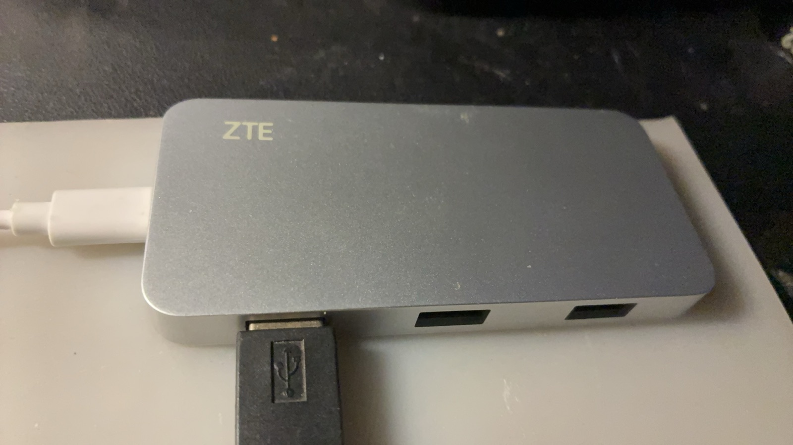
⚠️ 变砖兜底：Amlogic 的 MaskROM 在 SoC BootROM 里（短接可重新进刷写模式）， 加上你手上的原厂线刷固件包，就能恢复。这两样在手，这一步的风险才是可控的。
18. 退回去
- 最省事：把 U 盘插回去 —— u-boot 的启动偏好仍优先 U 盘，插上就从 U 盘跑（安装器回写的是原厂 u-boot，偏好没变）。 - 用备份恢复：从 U 盘启动后 armbian-ddbr 选 r，从 /ddbr/BACKUP-arm-64-emmc.img.gz 还原。 - 回原厂安卓：原厂线刷固件包 + MaskROM 短接重刷（§20.5）。
- U 盘路线（eMMC 没写）：断电 → 拔 U 盘 → 上电 = 原厂安卓。零痕迹。
- 已写 eMMC：
19. 三条红线（会踩出"没有报错的故障"）
① 停服务只用 systemctl，不要 kill 进程。
Linux 上 frpc 的残留清理是 Windows-only 的。一个残留的 frpc 会占住 proxy 名，导致下次启动 隧道起不来而界面毫无提示。systemctl stop 会连带清掉 frpc，kill 不会。
② 登录限流是全局桶，误锁影响所有人。
经公网访问时所有登录共享同一个来源 IP，限流是 5 次失败 / 300 秒，而且全局。 不是你一个人被锁 5 分钟——是所有人。
③ 内核升级只走 armbian-update，保持 w103d 变体。
W103D 的 WiFi 完全依赖专属内核补丁 + MT7663S 固件 overlay。 换成通用内核 = 静默丢 WiFi：没有报错，只是连不上。
20. 排障
| 症状 | 先看 | 多半是 | |
|---|---|---|---|
| 打不开网页 | ip a；systemctl status mrrc-modern | 网线/服务；journalctl -u mrrc-modern -n 50 | |
| 网页只转圈 | 换 https://（不是 http） | 端口 8888 + 自签证书警告要放行 | |
| 手机按 PTT 没反应 | 地址栏是不是 https:// | HTTP 下浏览器不给麦克风权限 | |
| 没有网口地址 | nmcli device status | 换网线/换口；路由器 DHCP | |
| 扫描列表是空的 / 页面列不出 Wi-Fi | `dmesg \ | grep -c "mailbox write"` | 计数 > 0 = 无线芯片已楔死（多半是连过 5 GHz）→ 重启盒子 |
| Wi-Fi 连上去了但没网 | ip route 看默认路由走哪个口；ping <网关> | 别用 5 GHz：能关联、能拿地址，但数据面不通（§20.5）；只连 2.4 GHz | |
| IPv6 直连打不开网页 | `ss -ltn \ | grep 8888` | 盒子线的网页只绑 0.0.0.0（IPv4）；想听 IPv6 就把 MRRC_WEB_HOST 改成 ::（§9.8） |
公网 w103d.vlsc.net 指向的地址不对 | dig +short AAAA w103d.vlsc.net @223.5.5.5 与盒子实际 IPv6 对比 | 镜像里没有 DDNS 组件（/opt/w103d-ddns）；重刷后 machine-id 变 → IID 变，记录就陈旧了 | |
| 没有串口 | ls /dev/ttyUSB /dev/ttyACM | USB 线；FT-710 要插上方 Enhanced 口；电台菜单 MOD SOURCE = USB | |
| 有串口但连不上 | mrrc-radio show 的串口对不对 | mrrc-radio use <model> --port /dev/ttyXXX | |
| 没声音 | arecord -l 有没有电台声卡 | 换线/换口；服务日志里的 PyAudio 设备列表 | |
| 声音卡顿/断续、听一会儿就没了 | cat /proc/asound/card1/stream0（看 Capture 是不是 Status: Stop）；`journalctl -u mrrc-modern \ | grep -i "capture stalled"` | 采集缓冲溢出后静默停摆（本机 ALSA 只给 1–2 个 20 ms 周期）。服务会自己重开并把原因写进日志；若反复出现，把 MRRC_RX_BUFFER_MS 调大（§13） |
| 瀑布图是合成谱（S 表） | ls -l /opt/mrrc_modern/vendor/ftdi/；ls -l /etc/udev/rules.d/99-mrrc-ftdi.rules | 缺 FTDI 库，或没插 Enhanced 口（`cat /sys/bus/usb/devices/*/idProduct \ | grep 601c）；或 udev 规则缺失 —— 真 FFT 要服务用户 mrrc 能写那个 USB 节点，判定：sudo -u mrrc test -w /dev/bus/usb/001/00N && echo ok` |
| Cloud Hub 显示"已连接"但公网 502 | verify.sh 第 8、9 项 | 多半 fleet/frpc 缺失（connect() 会返回 tunnel_started:false） | |
| 公网证书报错 | verify.sh 第 7 项 | EnvironmentFile 与 MRRC_CONFIG_FILE 必须指向同一个文件（设计 D-11） | |
| 服务反复重启 | journalctl -u mrrc-modern -n 100 | Python traceback；核对机型与串口 | |
| 发射没功率 | 状态行的 TX[... pk:...] | 采集源/音量；FT-710 的 mic_gain；SSB 无话音即无功率 | |
| 延迟越来越大 | 状态行 J: | 正常 100–300 ms；长期 >500 说明抖动缓冲在追，查网络 |
20.5 另一条路线：线刷（USB Burning Tool，直接写 eMMC）
来自网上另一个人给 W103D 做的 Armbian 桌面版。它走的是完全不同的路线：不烧 U 盘，而是用晶晨的 线刷工具直接把系统写进 eMMC（覆盖原厂安卓）。
代价与收益：一步到位、不占 USB 口、32 GB 全用上；但原厂安卓被覆盖，回滚要靠线刷固件包 + MaskROM 短接。想先零风险试跑，走本文 §4–§5 的 U 盘路线。
| U 盘路线（本文主线） | 线刷路线（本节） | |
|---|---|---|
| 工具 | dd / Etcher 烧 U 盘 | Amlogic USB Burning Tool（导入 .img，不是写盘工具） |
| 目标 | 从 U 盘运行 | 直接写 eMMC |
| 原厂系统 | 保留 | 被覆盖 |
| 进模式 | update 模式（复位孔 / reboot update） | 线刷模式（见下） |
进线刷模式（W103D 特有的做法）：
- 用 晶晨线刷 HDMI 短接器（短接 HDMI 口内特定引脚）
- USB 公对公线插「靠 HDMI 那个 USB 口」
- 工具识别到设备后开始刷写
工具里的擦除选项：选「擦除 flash / 普通擦除 / 擦除 bootloader」，不要选「强制全擦除」。 刷到 100% 再点停止。
首次启动：会建立 eMMC 启动入口并自动重启一次，然后扩容文件系统、建 swap。 给足 3–5 分钟，别以为死机了。
首次登录：root / 1234 或 armbian / 1234 —— 进去第一件事改口令（同 §7）。 SSH 主机密钥是首启新生成的，所以旧指纹会变（客户端会警告，正常）。
MT7663 固件：出厂 2021 版已钉进仓库（2026-10-11 真机定案）
W103D 的无线是 MT7663S（WiFi 与蓝牙同一颗芯片），开源驱动是这块板最麻烦的部分； 上游适配见 ophub 的 PR #3658 / #3659。
2026-10-11 真机定案：基底镜像自带的 linux-firmware 2020 版 N9 固件（3.1.1 / 20200604） 在这块板上会渐进式挂死（能连、每 ~30 秒掉线一次、扫描楔死、~16 分钟后 MCU 无响应、 软重启都不复位）。可用的是出厂 Android 里的 2021 版（7663mp1827 / 20210308）：
SHA-256 223f73f17f0f986dc4e7167daa6eef14ffb41c713f22d70f9645eb049bdec80a这份固件已经钉进仓库、随构建装入镜像（vendor/mediatek/ → /lib/firmware/mediatek/， 构建期校验 SHA，dpkg-divert 防包升级覆盖）——下一份镜像构建起生效。⚠️ 注意区分： 当前线上下载的 v1.25.5 镜像（SHA 5d74f737…）里没有它，那份镜像的 N9 还是 2020 版， WiFi 就是会渐进式挂死（症状见上）。装好新版镜像后，现场核实方法：
sha256sum /lib/firmware/mediatek/mt7663_n9_v3.bin # 必须是 223f73f1 开头
dmesg | grep "N9 Firmware" # 必须是 7663mp1827, Build Time: 20210308205639修好后实测（2.4G）：200 包 0.5% 丢包、平均 6.3 ms、零掉线。两个仍然成立的边界： 5GHz 能连上但数据面严重丢包（别用）；AP 模式不发信标（初始化热点在这块板上 起不来，首次配置走网线、预置 Wi-Fi 或 HDMI）。
老镜像（含当前已发布的 v1.25.5）现场换法：拿到钉版文件后
cp mt7663_n9_v3.bin /lib/firmware/mediatek/mt7663_n9_v3.bin
dpkg-divert --add --no-rename /lib/firmware/mediatek/mt7663_n9_v3.bin
# 钉版固件下**软重启就能重载**（2026-10-12 实测 47 秒复位）；拿不准就断电
systemctl reboot2026-10-12 真机记录：2.4 GHz 能用、5 GHz 会拖死芯片（1.26.0 首次完整验收）
那一晚在一台刚刷好的 1.26.0 盒子上把无线这条路从头走到尾，结论如下 （局域网配网页的扫→选→连全链路真机跑通，每条都有可复现的命令）：
| 事实 | 证据 | |
|---|---|---|
| 钉版固件确实装上了 | dmesg 打 N9 Firmware Version: 7663mp1827, Build Time: 20210308205639；`dpkg-divert --list \ | grep mt7663 有记录；sha256sum = 223f73f1…` |
2.4 GHz 全绿（CMCC-cnham，ch11） | 关联 → DHCP 192.168.1.217 → 网关 192.168.1.1 通 → 外网通 → 拿到全局 IPv6 → NTPSynchronized=yes；全程 mailbox 报错 0 / MCU 超时 0 | |
| 5 GHz（ch149）会拖死芯片 | 关联成功、DHCP 地址也拿到了，但网关不通（数据面死）；约 100 秒后 Message 000500c0 (seq 7) timeout 开始，接着 W103D mailbox write … failed: -110 连续出现 → 扫描从此返回空表 | |
| 扫描本身没问题 | 芯片健康时一次 nmcli … wifi list --rescan yes 列出 11 个网络，扫完再查 mailbox 报错 仍然是 0 | |
/settings 扫→选→连全链路跑通 | 服务端日志：box: switching to WiFi 'CMCC-cnham' + POST /api/box/wifi 200 + 两次 GET /api/box/wifi/status 200；NM 落地 CMCC-cnham.nmconnection（0600、autoconnect=yes） | |
| 软重启能复位（修订老结论） | 老结论“必须断电”来自 2020 版固件时代；钉版 2021 下 systemctl reboot 后 47 秒回来，固件重新加载、报错归零、扫描恢复 | |
| 网页只听 IPv4 | `ss -ltn \ | grep 8888 = 0.0.0.0:8888（无 [::]:8888）；nc -6 <盒子IPv6> 8888 = CLOSED，而 [::]:22` 的 SSH 通 |
| 镜像里没有 DDNS 组件 | ls /opt/w103d-ddns 不存在、`systemctl list-timers \ | grep ddns 为空 → w103d.vlsc.net 的 AAAA 不会跟着新 IPv6 走（老盘那份是手工装的，实现计划见 docs/superpowers/plans/2026-10-11-w103d-ddns.md`） |
| 扫描空表时页面不给提示 | GET /api/box/wifi 返回 200 + {"networks":[]}，页面渲染空白列表（无错误文案）——已知小缺陷 |
一句排障口诀：扫描空 → 先看 dmesg | grep -c "mailbox write"；> 0 就重启（软重启即可）， 并回想刚才是哪条 SSID（连过 5 GHz 就是这个下场）；列表正常但一条不连 → 看是不是真没信号。
---
21. 打勾清单：从零到 "MRRC 能干活"
刷机段
- 认准芯片是 S905L3A（不是 GK6323/RK3566）
- 镜像 SHA-256 =
5d74f737…，字节数 =1,154,545,271 - U 盘烧好、安全弹出
- （可选，但推荐）按 §4.1 把根分区扩到整盘：
df -h /不再是 2.9 G - 按复位孔（或
reboot update）从 U 盘启动，屏幕上是 Linux 日志不是安卓动画 -
ssh root@<IP>进得去，并且已经passwd root改掉 1234 -
mrrc-show-password拿到 Web 口令 - Web 口令收好了（改过一次就会关掉
/setup的免密窗口，之后只能靠这个口令进） -
https://<IP>:8888打得开、登录成功
MRRC 配置段
- 网线插好（
ip a有地址） - 电台 USB 线插在上方 Enhanced 口
-
/dev/ttyUSB*出现、arecord -l能看到电台声卡 -
mrrc-radio use ft710（或你的机型）跑通、mrrc-radio show对得上 - 界面上频率/模式跟着电台走（CAT 通）
- 瀑布图是真频谱（不是 S 表合成谱）
- 按下 PTT 能发射、松开能收到（这一步才算真的能用）
- （没有网线时）预置了
/boot/mrrc-wifi.txt（§9.3），或改用 HDMI +nmtui（§9.4）；原"只用手机走通 §9.6"的热点引导已退役（2026-10-11 真机验证失败） - （用 Wi-Fi 时）连的是 2.4 GHz（
nmcli -f GENERAL.CONNECTION,GENERAL.STATE dev show wlan0），没连带-5G的那个（5 GHz 能连上但没数据面，见 §20.5） - （装了 1.26.0+）
https://<IP>:8888/settings打得开：盒子身份 / 网络体检 / Wi-Fi / 有线口都在这一页（§9.8） -
verify.sh12 项全过 - （可选）
MRRC_LISTEN_PASSWORD给朋友开了收听入口 - （可选）Cloud Hub 接入，公网
https://<呼号>.mrrc.vlsc.net/打得开 - 固化进 eMMC（推荐的最终形态；先
armbian-ddbr备份原厂）：从此不插 U 盘，接线只剩电源 + 网线